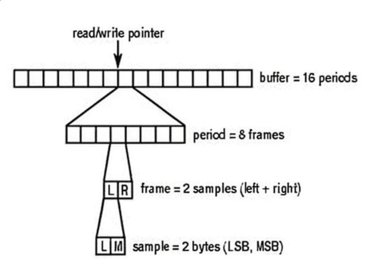

处理Alsa播放中的underrun问题
在 ALSA (Advanced Linux Sound Architecture) 中, underrun（缓冲区下溢）问题是音频编程中的一个常见状况。Underrun 发生在应用程序向声卡提供音频数据的速度跟不上声卡播放数据的速度时，导致声卡缓冲区变空。此时程序会抛出“UnderRun”异常，或在音频播放出现音频播放出现爆音 (clicks/pops)、卡顿 (stuttering)、断断续续或短暂的静音。
什么是Underrun
一个形象的比喻描述Underrun
想象一下声卡的播放缓冲区是一条匀速前进的传送带，而你的应用程序负责往传送带上放产品（音频数据）。
-
正常情况：你总是能及时地在传送带到达末端前放上新的产品，传送带持续运转，声音连续播放。
-
Underrun 发生时：你因为某些原因（比如正在忙别的事情，或者拿产品的速度太慢）没能及时放上新产品，传送带上出现了空缺。当这个空缺到达末端时，机器（声卡）无事可做，就会发出一声“咔嗒”（爆音），然后等待下一个产品的到来。
Underrun的触发
1. 背景：声卡播放过程
-
声卡开启：
- 在ALSA中，声卡通过
snd_pcm_open打开，并通过snd_pcm_hw_params配置硬件参数（如采样率、周期大小、周期数等）。 - 声卡开始播放通常由以下操作触发：
- 第一次调用
snd_pcm_writei写入足够数据（达到启动阈值）。 - 显式调用
snd_pcm_start（手动启动播放）。
- 第一次调用
- 一旦声卡启动，它会以固定速率（取决于采样率，音频格式和通道数）从缓冲区读取数据。
- 在ALSA中，声卡通过
-
欠载（Underrun）：
- 当声卡尝试读取数据但缓冲区为空时，发生Underrun。
- Underrun通常导致音频中断、静音或杂音，下一次调用
snd_pcm_writei返回-EPIPE，需要调用snd_pcm_prepare或snd_pcm_recover恢复。
-
不写入数据：
- 如果声卡启动后，应用程序完全不调用
snd_pcm_writei或写入零数据，缓冲区会因声卡持续消耗而耗尽，导致Underrun。
- 如果声卡启动后，应用程序完全不调用
2. Underrun触发时间
在声卡开启后，Alsa驱动以周期（period）为单位，以恒定速率（取决于采样率）每次从缓冲区中取一个周期的数据，送入声卡。而周期的大小以帧（frame）为单位，每个帧包含所有声道的一个采样点（sample）。
一个双声道，16bit位深音频的播放过程如下图所示：

因此当缓冲区中的数据被取尽，但在声卡下一次取数据前缓冲区没有新数据进入，Underrun会被触发。故可以通过以下公式计算出，如果程序处理一帧数据的时间大于：
则Underrun迟早会被触发。或如果声卡开启后，这一段时间没有数据送入，则会触发Underrun。故Underrun的触发时间涉及到如下参数：
-
缓冲区大小：
- 缓冲区大小 = 周期大小（period size） × 周期数（periods），以帧为单位。
- 周期大小通过
snd_pcm_hw_params_set_period_size设置，例如1024帧。 - 周期数通过
snd_pcm_hw_params_set_periods设置，通常为2或3。 - 例如，周期大小1024帧，周期数2，缓冲区大小 = 1024 × 2 = 2048帧。
-
采样率：
- 通过
snd_pcm_hw_params_set_rate设置，例如44100Hz（44.1kHz）。
- 通过
-
帧：
- 1帧包含所有通道的样本（例如，16位立体声，帧大小 = 2通道 × 2字节 = 4字节），但时间计算只关心帧数。
示例计算：
-
假设：
- 周期大小 = 1024帧
- 周期数 = 2
- 采样率 = 44100Hz
-
缓冲区大小 = 1024 × 2 = 2048帧
-
Underrun时间：
-
结论：声卡启动后，如果完全不写入数据，约46.44毫秒后会触发Underrun。
其他示例：
-
高采样率（192kHz，1024帧 × 2周期）：
-
低采样率（8000Hz，1024帧 × 2周期，VoIP场景）：
-
更大缓冲区（2048帧 × 3周期，44100Hz）：
解决Underrun
ALSA 参数配置
通过调整缓冲区（buffer）和周期（period）的大小，可以为应用程序争取更多的时间来准备数据，从而减少 Underrun 的风险。
(1) 周期大小和缓冲区大小
alsa中通常有两种设定方法：
-
先设定buffer_size，然后再设置periods，即缓冲区中包含多少个周期，在完成这两个参数设置后，period_size会被自动确定（buffer_size / periods）
-
先设定period_size，然后再设置periods，在完成这两个参数后，buffer_size会被自动确定（period_size * periods）
下面是设定这些参数以及读取缓冲区大小的方法：
-
周期大小（Period Size）：
- 较大的周期大小（如2048帧）可以增加缓冲区容量，延长Underrun时间。
- 设置方法：
1
2snd_pcm_uframes_t period_size = 2048;
snd_pcm_hw_params_set_period_size_near(pcm_handle, params, &period_size, &dir);
-
周期数（Periods）：
- 更多的周期数（如3或4）增加缓冲区，延迟欠载。
- 设置方法：
1
2unsigned int periods = 3;
snd_pcm_hw_params_set_periods_near(pcm_handle, params, &periods, &dir);
-
缓冲区大小（Buffer Size）：
- 较大的周期大小（如2048帧）增加缓冲区容量，延长欠载时间。
- 设置方法：
1
2snd_pcm_uframes_t buffer_size = 2048;
snd_pcm_hw_params_set_period_size_near(pcm_handle, params, &buffer_size);
-
查询缓冲区大小：
1
2
3
4snd_pcm_uframes_t buffer_size;
snd_pcm_hw_params_get_buffer_size(params, &buffer_size);
printf("Buffer size: %zd frames, Underrun time: %.2f ms\n",
buffer_size, (double)buffer_size / rate * 1000);
应用程序设计
通过修改声卡参数只能延缓Underrun出现的时间，而从应用程序设计角度修改音频处理逻辑才是从根本上解决问题的关键。
-
使用独立的音频线程：
将所有与音频处理（生成、写入数据）相关的代码放到一个独立的、高优先级的线程中。这个线程不应该被 UI 更新、文件 I/O、网络请求等耗时操作阻塞。 -
避免在音频线程中做“重活”：
音频线程的循环应该是轻量级的。避免在其中进行：
-
内存分配 (malloc, new) 或释放 (free, delete)。
-
文件读写。
-
复杂的计算或算法。
-
任何可能导致阻塞的操作。
-
策略：使用另一个“工作线程”来准备数据，并通过一个锁无关（lock-free）的环形缓冲区（ring buffer）或队列将数据传递给音频线程。
-
使用 poll() / select() 进行非阻塞写入：
不要让snd_pcm_writei()长时间阻塞。使用poll()或select()来等待 PCM 设备变为可写状态，这样你的音频线程可以在等待时做其他事情或让出 CPU。
借助poll()实现非阻塞写入
1. 以非阻塞模式打开 PCM 设备
这是最关键的前提。在调用 snd_pcm_open() 时，必须包含 SND_PCM_NONBLOCK 标志。
1 |
|
2. 获取与 ALSA 相关的 文件描述符(File Descriptors)
poll() 函数是作用于文件描述符上的。需要从 ALSA 获取与当前 PCM 流关联的所有文件描述符。
1 |
|
3. 在写入循环中使用 poll()
现在，在你的主写入循环中，不要直接调用 snd_pcm_writei()，而是先调用 poll() 来等待设备可写。
完整循环逻辑示例：
1 |
|
借助select()实现非阻塞写入
使用select()的步骤如下
-
获取最大文件描述符:
snd_pcm_poll_descriptors()不直接适用。你需要手动遍历 pfds 数组来找到最大的 fd 值。 -
设置 fd_set: 使用
FD_ZERO()初始化一个fd_set，然后使用FD_SET()将从snd_pcm_poll_descriptors()得到的每个文件描述符加入到写集合 (writefds)中。 -
调用
select()。 -
循环检查
FD_ISSET(): 在select()返回后，你需要再次遍历所有文件描述符，用 FD_ISSET() 检查哪个是就绪的。 -
重复设置 fd_set:
select()可能会修改传入的 fd_set，所以在每次循环调用select()之前，你都必须重新初始化和设置它。
关键步骤差异：
-
数据结构：
select()使用 fd_set 类型来存储文件描述符集合，而不是 struct pollfd 数组。 -
最大文件描述符：调用
select()时，snd_pcm_poll_descriptors()不直接适用。你需要手动遍历 pfds 数组来找到最大的 fd 值。 -
循环内重置：
select()会修改传入的 fd_set，因此在每次循环调用 select() 之前，你必须重新清空并设置 fd_set。超时 struct timeval 也可能被某些系统修改，所以也建议在循环内重置。
下面是一个借助select实现非阻塞写入的例子：
1 | void non_blocking_write_select_example(snd_pcm_t *pcm_handle) { |
poll() 与 select() 的对比
下面是这两个函数在一个表格中的详细对比：
| 特性 | select() | poll() | 优劣分析 |
|---|---|---|---|
| 文件描述符 (FD) 限制 | 有。受 FD_SETSIZE 宏的限制（通常是1024）。如果需要监控超过这个数量的 FD，select() 无法胜任。 | 没有。只受限于系统资源（如内存和打开文件的最大数量）。 | 这是一个巨大的缺点，使得 select() 不适用于需要处理大量并发连接的现代服务器应用。对于只有少数FD的ALSA应用，这一点影响不大。 |
| API 易用性 | 较差。每次调用前都需要：<br>1. 手动找到 max_fd。<br>2. 清空并重新填充 fd_set。<br>3. 重新设置 timeout 结构体。 | 较好。你只需要初始化一次 struct pollfd 数组中的 fd 和 events 字段。内核不会修改它们，结果存储在 revents 字段中，输入和输出分离，更清晰。 | poll() 的 API 设计更现代，代码更简洁，不易出错。select() 的“每次都要重置”特性是常见的bug来源。 |
| 性能 | 可能较低。内核需要遍历从0到max_fd的所有文件描述符来检查状态，即使你只关心其中的少数几个。当max_fd很大但实际监控的FD很少时，效率低下。 | 通常更高。内核只需要遍历你传入的 pollfd 数组中的那些FD，而不需要扫描整个范围。 | 对于FD数量多且分布稀疏的情况，poll() 的性能优势明显。对于少数几个FD，性能差异可以忽略不计。 |
| 可移植性 | 极好。是 POSIX 标准的一部分，几乎所有类 Unix 系统都支持，历史悠久。 | 也很好。也是 POSIX 标准的一部分（SUSv2, POSIX.1-2001），所有现代的类 Unix 系统（Linux, macOS, BSDs 等）都支持。 | 在今天的开发环境中，两者在可移植性上的差异已经微乎其微。select() 的可移植性优势主要体现在一些非常古老或嵌入式的小众系统上。 |
| 返回信息 | 只能告诉你 FD 是否“就绪”（可读、可写、异常），但不能区分更具体的事件。 | revents 字段可以返回更丰富的事件信息，如 POLLHUP (挂起), POLLERR (错误), POLLNVAL (无效FD) 等，与你监听的 POLLIN/POLLOUT 事件是分开的。 | poll() 提供了更详细的诊断信息。 |
结论:
-
对于新开发的应用程序，几乎在所有情况下都应该优先选择 poll() 而不是 select()。 poll() 的 API 更友好，没有 select() 的硬性限制，并且通常有更好的性能。
-
只有在你需要代码在一些非常陈旧、只支持 select() 的平台上运行时，才有理由使用 select()。
-
Linux 上的终极选择: 如果你的应用只针对 Linux，并且需要处理成千上万的并发连接（这在音频应用中不常见），那么 epoll() 是性能最好的选择。它使用事件通知机制，避免了每次调用时内核都要遍历所有被监控的FD，效率最高。但 epoll() 不是可移植的 POSIX 标准。
对于 ALSA 编程，poll() 是功能、性能和可移植性三者之间的最佳平衡点。